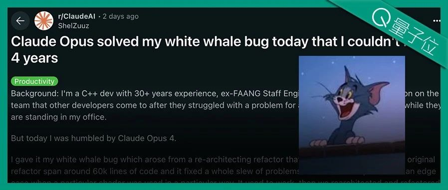
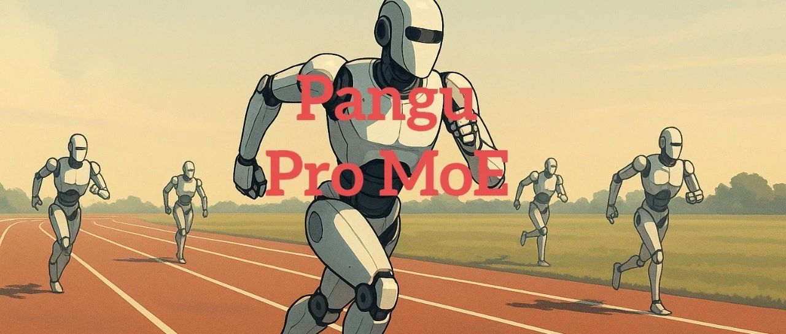
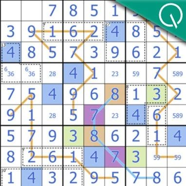

wechat
Claude 4破解困扰人类4年系统bug，30年码龄程序员200小时没搞定，GPT-4.1/Gemini-2.5也做不到
Published: 2025-05-28T04:23:13.000Z

Anthropic旗舰大模型Claude Opus 4成功破解了一个困扰资深C++程序员长达四年、耗时200小时未解的复杂系统顽固性bug，而此前GPT-4.1和Gemini-2.5等模型均未能解决。这位拥有30年开发经验的程序员在33个prompt和一次重启后，Claude Opus 4便清晰定位并提供了解决方案。此次事件凸显了Claude 4系列模型在编程和推理能力上的显著提升，特别是其Code模式作为智能代码助手，可高效处理代码重构、bug修复等工程任务，展示了AI在复杂软件开发领域日益强大的辅助与问题解决潜力，预示着AI辅助编程的未来趋势。
第二次Sora时刻来了！全球首款实时摄像头诞生，真人感拉满颠覆全行业
Published: 2025-05-28T05:06:10.000Z
新智元报道指出，硅谷公司AKOOL正式发布全球首款实时AI摄像头——AKOOL Live Camera，被誉为AI视频领域的“第二次Sora时刻”。该产品集虚拟数字人、实时翻译、实时换脸及实时视频生成四大功能于一体，以超低延迟和影视级画质，实现了“边拍边生”的突破性创新。AKOOL Live Camera具备情境感知与情感响应的智能交互能力，彻底改变了传统“文生视频”的预制化模式。通过4D面部映射、神经语音引擎等先进技术，AKOOL正推动数字交互从“预制化”迈向“智能化响应”时代，有望深刻革新视频制作与数字营销行业。
华为盘古首次露出，昇腾原生72B MoE架构，SuperCLUE千亿内模型并列国内第一
Published: 2025-05-28T08:10:04.000Z

华为盘古团队近日发布突破性混合专家模型（MoE）——分组混合专家模型（MoGE），旨在解决传统MoE中专家激活不均衡导致的计算效率瓶颈。该架构通过引入分组机制，在4K昇腾大规模集群上实现专家负载均匀分布，并构建出盘古Pro MoE大模型。该模型（总参数72B，激活参数16B）在昇腾300I/800I平台上展现出卓越推理效率，最高可达1528 tokens/s。在最新SuperCLUE榜单上，盘古Pro MoE在千亿参数以内大模型中并列国内第一。此次创新不仅标志着大模型技术从“参数军备竞赛”转向“实效主义”，更凭借软硬件协同优化，为企业级应用的高效部署提供了新范式。
AI狂飙100天，中国力量突起！顶流视频号10分钟看尽全球最强杀招
Published: 2025-05-28T05:06:10.000Z
文章回顾了自2025年初全球AI版图的剧烈重绘。中国DeepSeek以开源大模型DeepSeek-R1的卓越能力，突破硅谷技术壁垒，引发市场震动。面对挑战，OpenAI迅速通过价格战、发布GPT-4.5及GPT-4o进行反击，马斯克亦通过Grok抢占算力话语权。在此期间，DeepSeek进一步推出本地可运行的多模态模型V3，推动AI从实验室走向普通用户。至4月，AI发展已从“参数至上”转向“实用主义”，国产大模型全面接入主流平台，标志着AI技术正加速走向全民普及，重塑社会生产方式。
大模型玩不好数独？！Transformer作者初创公司公布排行榜：o3 Mini High“变异数独”正确率仅2.9%
Published: 2025-05-28T04:23:13.000Z

由Transformer作者Llion Jones创立的Sakana AI公司，发布了AI数独能力基准测试Sudoku-Bench，旨在评估大模型的创造性推理能力。测试结果揭示，大模型整体数独正确率仅15%，在更具挑战性的9x9变异数独中，即使是高性能模型o3 Mini High，正确率也仅有2.9%。这凸显了当前大模型普遍存在的“记忆依赖症”缺陷，即它们倾向于记忆而非真正进行逻辑推理。该基准通过引入无法依靠记忆解决的“变异数独”，为促进AI推理能力的实质性提升提供了新方向，NVIDIA CEO黄仁勋亦肯定此类谜题对提升AI推理能力的重要性。
一个省略号提示+强化学习搞定大模型“过度思考”，中科院自动化所新方法：从强制推理到自主选择
Published: 2025-05-28T04:23:13.000Z
中科院自动化研究所与鹏城实验室联合提出AutoThink新方法，旨在解决大语言模型“过度思考”问题。该方法通过在提示词中加入省略号，并结合三阶段强化学习，赋予大模型自主决定何时以及如何深度思考的能力，使其能根据题目难度动态切换思考模式，实现“按需思考”。实验结果显示，AutoThink不仅能有效提升模型在复杂任务上的准确率，同时大幅减少Token消耗，显著提高推理效率，并已集成至ScienceOne平台。此创新范式为大模型实现性能与算力的双重优化提供了新思路，推动了模型向更智能、更经济的通用智能方向发展。
huggingface
ScienceBoard：评估多模态自主智能体在现实科学工作流中的表现
Published: 2025-05-26T12:27:27.000Z

大型语言模型（LLMs）已将其影响力扩展到自然语言处理领域之外，极大地促进了跨学科研究的发展。近年来，研究人员开发了各种基于LLM的智能体，以协助跨多个方面和领域的科学发现进展。其中，能够像人类一样与操作系统交互的计算机使用智能体，正在为自动化科学问题解决和处理研究人员工作流中的 routine 任务铺平道路。认识到这些智能体的变革潜力，我们引入了ScienceBoard，它包含两个互补的贡献：（i）一个逼真、多域的环境，具有集成专业软件的动态且视觉丰富的科学工作流，智能体可以通过不同的接口进行自主交互，以加速复杂的科研任务和实验；（ii）一个具有挑战性的基准测试，包含169个由人类策划的高质量、经过严格验证的真实世界任务，涵盖生化、天文、地理信息学等领域的科学发现工作流。对具有最先进骨干模型（如GPT-4o、Claude 3.7、UI-TARS）的智能体进行的广泛评估表明，尽管取得了一些有前景的结果，但它们在可靠地辅助科学家完成复杂工作流方面仍远未达到要求，总体成功率仅为15%。深入分析进一步为解决当前智能体局限性和制定更有效的设计原则提供了宝贵见解，为构建用于科学发现的更强大智能体铺平了道路。我们的代码、环境和基准可在https://qiushisun.github.io/ScienceBoard-Home/获取。
Alita：实现可扩展智能体推理的通用智能体，具有最小预定义与最大自演化能力
Published: 2025-05-26T17:58:53.000Z

大型语言模型（LLMs）的最新进展使得智能体能够自主执行复杂的、开放式的任务。然而，许多现有框架过度依赖手动预定义的工具和工作流程，这阻碍了它们跨领域的适应性、可扩展性和泛化能力。在这项工作中，我们引入了 Alita——一款遵循“大道至简”（Simplicity is the ultimate sophistication）原则设计的通用智能体，通过最少的预定义和最大的自演化来实现可扩展的智能体推理。为了实现最小预定义，Alita 只配备了一个直接解决问题的组件，这比以往依赖大量手工制作的复杂工具和工作流程的方法要简单得多、整洁得多。这种简洁的设计增强了其泛化到具有挑战性问题的潜力，不受工具的限制。为了实现最大自演化，我们通过提供一套通用的组件来增强 Alita 的创造力，使其能够自主构建、完善和重用外部能力，方法是从开源生成与任务相关的模型上下文协议（MCPs），这有助于实现可扩展的智能体推理。值得注意的是，在 GAIA 基准测试验证数据集上，Alita 在通用智能体中取得了领先地位，pass@1 准确率达到 75.15%，pass@3 达到 87.27%；在 Mathvista 和 PathVQA 上，pass@1 准确率分别为 74.00% 和 52.00%，优于许多复杂度远高于它的智能体系统。更多详情将更新至 https://github.com/CharlesQ9/Alita。
压缩后的大语言模型能真正具备智能体能力吗？LLM压缩中智能体能力的实证评估
Published: 2025-05-26T02:49:07.000Z

训练后压缩降低了大语言模型（LLMs）的计算和内存成本，从而实现资源高效部署。然而，现有的压缩基准仅关注语言建模（例如困惑度）和自然语言理解任务（例如GLUE准确率），忽略了智能体能力——工作流、工具使用/函数调用、长上下文理解以及真实世界应用。我们引入了智能体压缩基准测试（ACBench），这是第一个用于评估压缩如何影响LLM智能体能力的综合基准测试。ACBench涵盖 (1) 跨越4种能力的12项任务（例如，用于工作流生成的WorfBench，用于长上下文检索的Needle-in-Haystack），(2) 量化（GPTQ, AWQ）和剪枝（Wanda, SparseGPT）等压缩方法，以及 (3) 15种模型，包括小型模型（Gemma-2B）、标准模型（Qwen2.5 7B-32B）和知识蒸馏推理型LLMs（DeepSeek-R1-Distill）。我们的实验揭示了压缩的权衡：4比特量化保留了工作流生成和工具使用能力（下降1%-3%），但使真实世界应用准确率下降了10%-15%。我们引入了ERank、Top-k排序相关性（Top-k Ranking Correlation）和能量（Energy）等指标来系统化分析。ACBench为在智能体场景中优化LLM压缩提供了可操作的见解。代码可在 https://github.com/pprp/ACBench 获取。
HoliTom：面向快速视频大语言模型的整体 Token 合并
Published: 2025-05-27T15:28:45.000Z

视频大语言模型 (video LLMs) 在视频理解方面表现出色，但由于冗余的视频 Token，面临显著的计算效率问题。现有的 Token 剪枝方法提供了一些解决方案。然而，在 LLM 内部进行处理的方法 (inner-LLM 剪枝)，如 FastV，在浅层会产生固有的计算开销。相比之下，在 LLM 之前执行 Token 剪枝的方法 (outer-LLM 剪枝) 主要解决单个帧内或有限时间窗口内的空间冗余，而忽略了长视频序列中关键的全局时间动态和关联性。这导致次优的时空冗余减少，并且未能充分利用视频的可压缩性。至关重要的是，结合这些策略的协同潜力及相互影响尚未得到探索。为了进一步减少冗余，我们引入了 HoliTom，一种新颖的、无需训练的整体 Token 合并框架。HoliTom 通过全局冗余感知的时序分割实现 outer-LLM 剪枝，随后进行时空合并，将视觉 Token 减少超过 90%，显著减轻了 LLM 的计算负担。作为补充，我们引入了一种基于 Token 相似性的鲁棒 inner-LLM 合并方法，旨在实现优异的性能并与 outer-LLM 剪枝兼容。评估表明，我们的方法在 LLaVA-OneVision-7B 上展现出良好的效率-性能权衡，将计算成本降低到原始 FLOPs 的 6.9%，同时保持了 99.1% 的原始性能。此外，我们在 Time-To-First-Token (TTFT) 上实现了 2.28 倍的减少，并在解码吞吐量上加速了 1.32 倍，突显了我们集成剪枝方法对高效视频 LLMs 推理的实际益处。
MotionPro：一个用于图到视频生成的精确运动控制器
Published: 2025-05-26T17:59:03.000Z

利用交互式运动控制对图像进行动画处理已在图到视频（I2V）生成领域越来越受欢迎。现代方法通常依赖大型高斯核来扩展运动轨迹作为条件，但没有明确定义运动区域，这导致运动控制粗糙，并且无法区分物体和相机的移动。为了缓解这些问题，我们提出了 MotionPro，一个精确的运动控制器，它创新地利用区域轨迹和运动掩码来分别调节细粒度运动合成和识别目标运动类别（即物体或相机移动）。技术上，MotionPro 首先通过跟踪模型估计每个训练视频上的光流图，然后采样区域轨迹来模拟推理场景。与通过大型高斯核扩展光流不同，我们的区域轨迹方法通过直接利用局部区域内的轨迹实现更精确的控制，从而有效表征细粒度运动。同时，从预测的光流图导出运动掩码，以捕捉运动区域的整体运动动态。为了追求自然的运动控制，MotionPro 通过特征调制结合区域轨迹和运动掩码，进一步增强了视频去噪能力。更值得注意的是，我们精心构建了一个基准，即 MC-Bench，包含 1.1K 对用户标注的图像-轨迹对，用于评估细粒度和物体级别的 I2V 运动控制。在 WebVid-10M 和 MC-Bench 上进行的广泛实验证明了 MotionPro 的有效性。请参阅我们的项目页面以获取更多结果：https://zhw-zhang.github.io/MotionPro-page/。
VideoGameBench：视频-语言模型能否完成流行的电子游戏？
Published: 2025-05-23T17:43:27.000Z

视觉-语言模型（VLM）在对人类具有挑战性的编程和数学基准测试中取得了显著成果，但它们执行对人类而言自然而然的任务（如感知、空间导航和记忆管理）的能力仍未得到充分研究。真实的电子游戏利用人类固有的归纳偏置，旨在让人们直观地学习和掌握，这使得它们成为评估VLM此类能力的理想测试平台。为此，我们引入了VideoGameBench，这是一个包含10款20世纪90年代流行电子游戏的基准测试，VLM可以直接与这些游戏进行实时交互。VideoGameBench挑战模型仅依靠原始视觉输入以及对目标和控制的高级描述来完成整个游戏，这与依赖于游戏特定脚手架和辅助信息的现有设置显著不同。我们将其中三款游戏保密，以鼓励开发能够泛化到未知环境的解决方案。我们的实验表明，前沿的视频-语言模型难以在每款游戏中取得进展，往往止步于开局阶段。我们发现推理延迟是前沿模型在实时设置下的主要限制；因此，我们引入了VideoGameBench Lite，在这种设置下，游戏会在等待语言模型执行下一步动作时暂停。表现最好的模型 Gemini 2.5 Pro 仅完成了 VideoGameBench 的 0.48% 和 VideoGameBench Lite 的 1.6%。我们希望将上述人类技能形式化为这一基准测试，能够推动这些研究方向的进展。